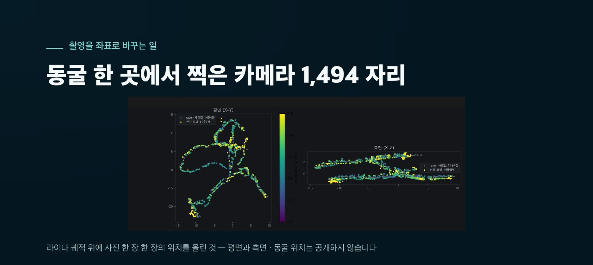

WHO IS ASKING
묻는 쪽에서 — 제주그래퍼가 하는 일
위 질문 가운데 첫 번째와 두 번째는 제주그래퍼가 그 자리에서 물은 것입니다. 왜 그런 질문을 했는지 적어 둡니다.
제주그래퍼는 제주의 공간을 실측 좌표 위에 기록합니다. 라이다 SLAM 장비와 360 카메라, 드론, 지상 카메라를 함께 돌려 찍고, 시각을 맞추고 하나의 좌표계로 정합한 뒤 3D 가우시안 스플래팅(3DGS)으로 복원합니다. 여기에 시간 축을 더해 같은 장소를 다시 기록하고 변화를 재는 쪽 — 4DGS로 작업을 넓히는 중입니다.


관련 작업 — 별도환해장성 디지털 트윈 (멀티스펙트럴 드론 한 번의 비행으로 만든 3D·스플래팅·정사영상·식생 분석)
작은 것과, 큰 공간
같은 3DGS라도 물건 한 개나 방 한 칸을 찍는 것과, 화구호·용암동굴·해안 성곽 같은 큰 공간을 찍는 것은 들어가는 장비도 후작업도 자릿수가 다릅니다.
흔한 경우
물건 한 개 · 방 한 칸
폰으로 한 바퀴, 몇 분
- 카메라 한 대로 충분
- 사진 수백 장
- 한 번에 학습
- 노트북 장비로도 된다
우리가 하는 것
화구호 · 용암동굴 · 해안 성곽
장비 여러 대를 조합한 며칠
- 라이다 SLAM + 360 + 드론 + 지상 카메라를 한 번에
- 사진 수만 장 · 궤적 수 km
- 구역을 나눠 따로 학습하고 다시 이어 붙인다
- 쓸 수 있는 장비가 곧 품질의 상한이 된다
촬영이 끝나야 작업이 시작됩니다 — 시각 동기, 하나의 좌표계로 정합, 구역 분할 학습, 플로터 제거, 압축. 현장보다 후작업이 큽니다.
28.6M용암동굴 한 곳의 스플랫 — 내부 698㎡
6.3GB그 장면 파일 하나
121,186동굴 전체 구간의 카메라 포즈
3구역장비 상한 때문에 쪼개 학습하고 다시 붙인 수
6대한 번에 돌리는 카메라 — 라이다·360·드론·지상
40TB지금 쌓여 있는 작업 원본
동굴 보호를 위해 위치는 공개하지 않습니다.